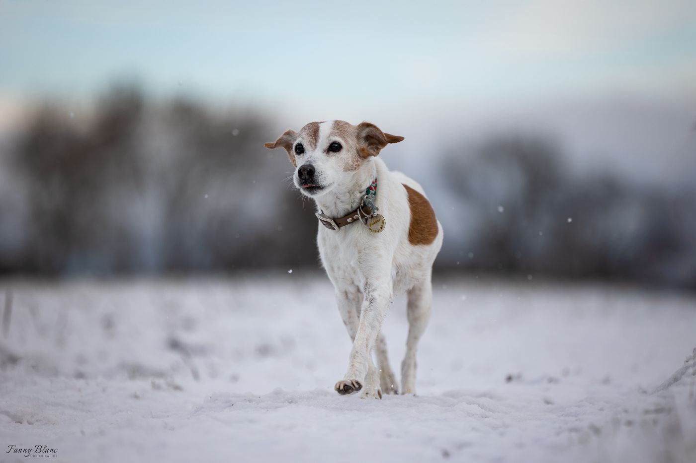
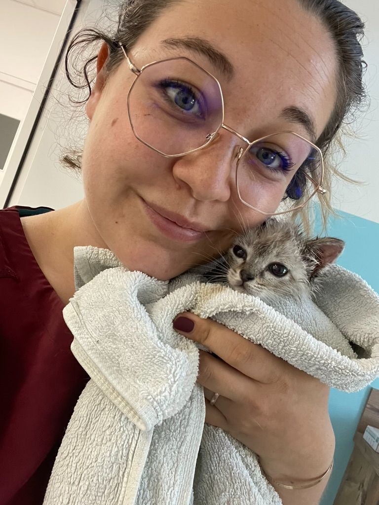
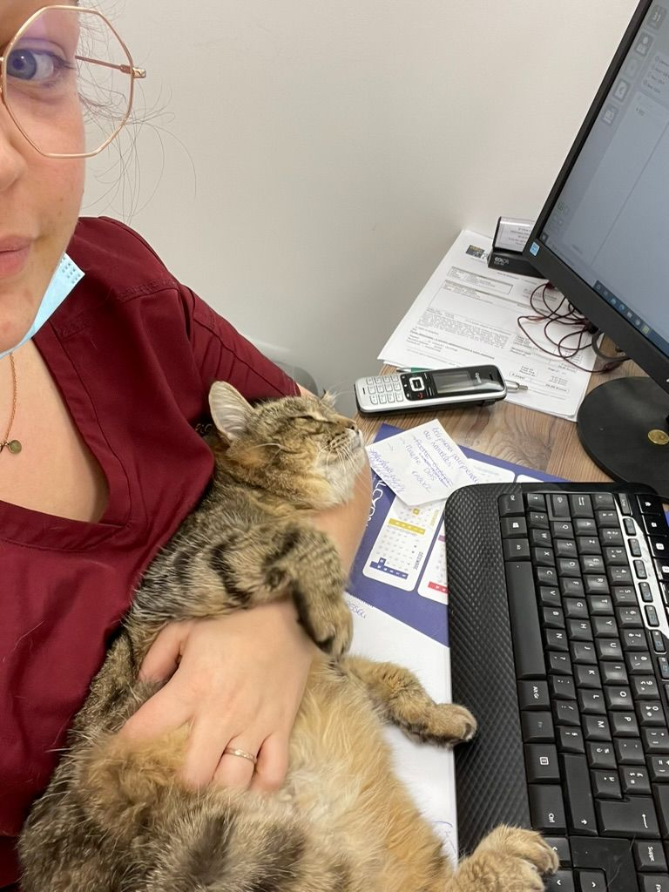
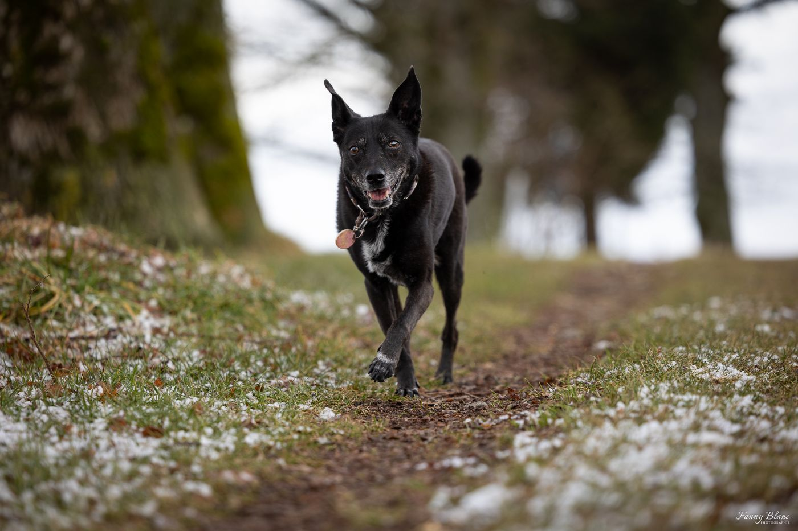
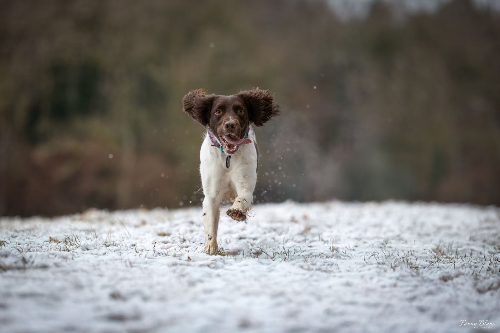

Jack Russell · 16 ans
Foebee
Vétéran du trail, elle a vu passer bien des sorties avant même qu'Aulpia existe.
Je m'appelle Aurélia, je suis ASV diplômée d'État, et je vis dans la plus belle région du monde : la Haute-Savoie (oui oui). Le canicross, le canitrail et la randonnée font partie de mon quotidien avec Foebee, Inna et Suerte. Aulpia n'est pas née d'une étude de marché. Elle est née d'une pause sur un sentier, où j'ai ravitaillé mon chien avec ce que j'avais sous la main.


ASV diplômée d'État, je me suis formée en nutrition animale, une discipline encore peu représentée en clinique vétérinaire, où la nutrition sportive canine reste un sujet de niche. J'accompagne au quotidien des propriétaires de chiens sur les questions d'alimentation, d'hydratation et de récupération à l'effort, à travers mon activité Aurélia Vetnurse.
Aulpia n'est pas un coup de marketing. C'est un manque que je croisais dans mon métier comme sur mes sorties, et je me suis vite rendu compte que je n'étais pas la seule.
Trois chiens, trois profils, trois raisons de tester Aulpia sur le terrain, pour eux, pas seulement sur le papier.

Vétéran du trail, elle a vu passer bien des sorties avant même qu'Aulpia existe.

Randonneuse modérée, elle illustre l'usage au-delà de la compétition : la marche active, la balade qui dure.

En entraînement canicross, elle représente le profil actif type auquel Aulpia s'adresse.
L'humain a tout à sa disposition : une barre, une gourde isotonique, un gel… Le chien, lui, n'avait rien. Sur un sentier, en pleine sortie, j'ai réalisé qu'il n'existait rien de facile à utiliser, avec une composition claire et adaptée. Je voulais une version liquide, qui se rebouche et se garde dans une poche. Alors je l'ai fabriquée.
Ce constat simple est devenu une conviction : un chien actif mérite la même attention nutritionnelle que son maître. Deux ans de tests terrain et de recherches plus tard, avec mes propres chiens comme premiers testeurs, Aulpia a pris la forme d'une gourde souple de 85 g : quatre ingrédients, une recette pensée pour être donnée en pause, sur le sentier.
« L'humain a tout à sa disposition pour son effort sportif. Le chien, lui, n'avait rien. »
La composition d'Aulpia n'est pas le fruit d'une intuition seule. Elle a été validée par une vétérinaire spécialisée en physiologie et nutrition du chien sportif, dans une logique de cohérence physiologique documentée plutôt que de promesse marketing.
Cette rigueur est au cœur de ma démarche : je préfère un produit honnête sur ce qu'il fait — et ne fait pas — à un produit qui promet plus qu'il ne peut tenir.